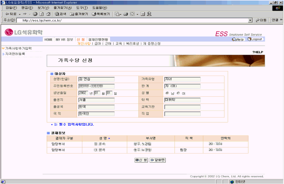

| Ⅱ. 화면사용법 및 유의사항 |
| <그림 1. 가족사항추가입력 화면> |
|
| |
| 1) 신규로 등록하는 가족에 대한 성명, 주민등록번호, 출생지, 가족유형, 관계, 학력, 교육기관, 직업 등을 |
| 입력한다. |
| |
| <그림 2. 가족사항추가입력 입력확인 화면> |
|
| |
| 1) 신규로 입력한 가족을 부양가족으로 등록하고자 한다면, 부양가족여부 신청 버튼을 클릭하여 저장한다. |
| 2) 전문직 사원의 경우에 가족수당을 신청할 때는 가족수당신청 버튼을 클릭한다. |
| 3) 신규로 입력한 가족을 건강보험 피보험자로 등록하고자 한다면, 건강보험 신청 버튼을 클릭한다. |
| |
| <그림 3. 부양가족여부 신청 화면> |
|
| |
| 1) 부양가족으로 등재되는 대상자는 연말정산시 소득공제에 적용된다. |
| 2) 부양가족여부 신청을 하기 위해 "부양가족", "장애인", "자녀보호", "동거여부" 등 해당사항에 체크한 후 |
| 결재정보를 확인하고 신청버튼을 클릭한다. |
| 3) 자녀보호에 체크하는 경우는 기혼여사원이나 배우자가 없는 남자사원의 경우 해당된다. |
| |
| <그림 4. 가족수당 신청 화면> |
|  |
| |
| 1) 전문직 사원인 경우 가족수당을 신청할 수 있다. |
| 2) 내용을 확인한 후 신청 버튼을 클릭한다. |
| ※ 부양가족으로 등록이 되어있는 경우에만 가족수당을 신청할 수 있음으로 "부양가족신청"이 선행되어야 하는 점을 유의 하여야 한다. |
| |
| <그림 5. 건강보험 피부양자 자격신청 화면> |
|
| |
| 1) 신청구분은 자격취득, 자격상실 중 선택한다. |
| 2) 취득일자나 상실일자에는 취득이나 상실의 사유가 발생한 일자를 입력한다. |
| 3) 취득사유나 상실사유를 선택하여 입력한다. |
| 4) 장애인인 경우 장애인 등록사항을 입력한다. |